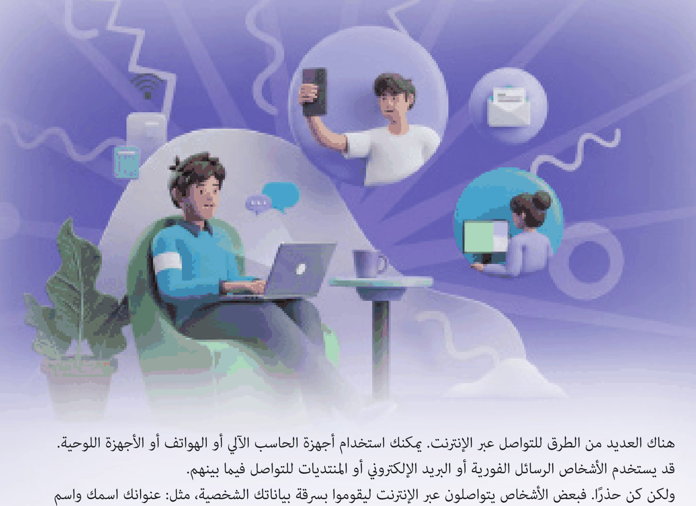
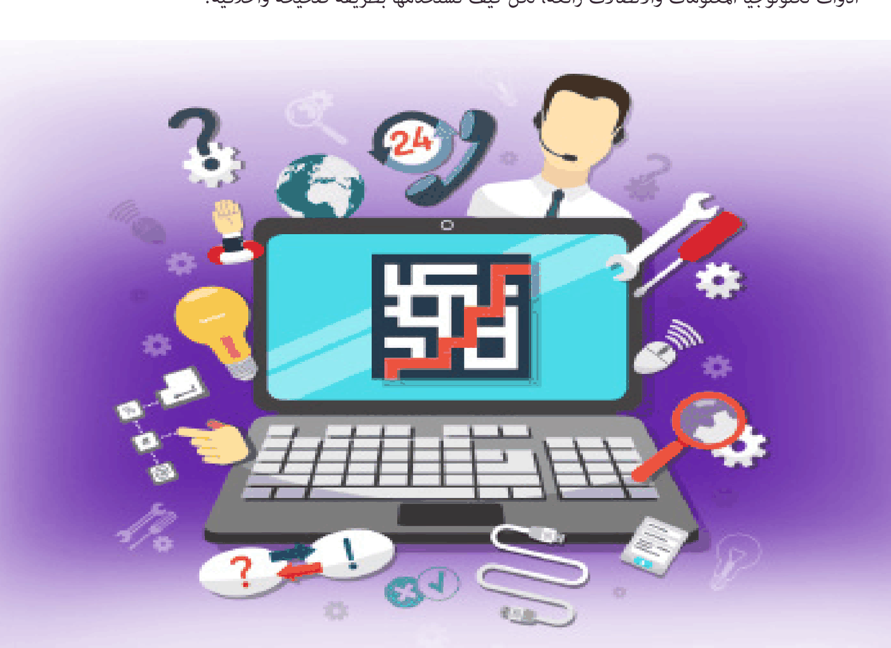

الموديول الرابع: مخاطر الإنترنت والاستخدام الأخلاقي
الإنترنت عالم رائع ومفيد جداً للتعلم والتواصل، لكنه يحتوي على بعض المخاطر مثل: المواقع غير الآمنة، الرسائل المزعجة (Spam)، الفيروسات الضارة، وسرقة البيانات الشخصية (Personal Data).

| نوع الخطر الرقمي | طبيعته وتأثيره | كيف تحمي نفسك منه؟ |
|---|---|---|
| التنمر الإلكتروني (Cyberbullying) | تصرف عدواني متكرر عبر الإنترنت (رسائل مسيئة، سخرية، تهديد) لإيذاء مشاعر الشخص. | • لا ترد على المتنمر بنفس الإساءة. • قم بعمل حظر (Block) له فوراً. • أبلغ والديك أو معلمك بالموقف. |
| الرسائل المزعجة (Spam) | رسائل غير مرغوب فيها تصل بريدك أو هاتفك تحتوي إعلانات خادعة أو روابط خبيثة. | لا تفتح أي رابط مجهول، واحذف الرسائل فوراً واستخدم فلتر الحجب. |
| سرقة الهوية والبيانات الشخصية | محاولة قراصنة الإنترنت (Hackers) سرقة اسمك، وعنوانك، ورقم هاتفك وكلمات مرورك. | لا تشارك بياناتك الشخصية إلا مع الأشخاص الموثوقين وبإذن والديك. |
الإنترنت زي الشارع الكبير: مينفعش تدي مفتاح بيتك واسمك ورقمك لحد متعرفوش ماشي في الشارع! لو حد ضايقك أو حسيت بخطر: «بلوك سريع + قولي لبابا وماما أو المستر فوراً»!
المواطن الرقمي الصالح هو الذي يستخدم التكنولوجيا باحترام وأمان، ويلتزم بالقوانين والأخلاق عند النشر والتواصل، ويحترم خصوصية أصدقائه وحقوق الآخرين.

| القاعدة الأخلاقية | الشرح والتطبيق العملي في حياتك اليومية |
|---|---|
| احترام الملكية الفكرية وحقوق النشر | إذا استخدمت صورة، فيديو، أو معلومة كتبها شخص آخر في بحثك، يجب أن تذكر اسمه والمصدر، ولا تنسب عمل غيرك لنفسك إطلاقاً لأن ذلك يُعد سرقة أدبية. |
| استئذان الأصدقاء قبل الإشارة (Tagging) | قبل نشر أي صورة تجمعك بزملائك أو وضع إشارة (Tag) لحسابهم على فيسبوك أو إنستغرام، يجب أن تستأذنهم أولاً، فربما لا يرغبون في نشر صورهم. |
| احترام آراء الآخرين ونبذ العنف | عند التعليق على منشور، استخدم كلمات مهذبة ومحترمة حتى لو اختلفت في الرأي، ولا تستخدم التكنولوجيا للسخرية من الآخرين. |
| التحقق من صحة الأخبار قبل النشر | لا تقم بنشر أو مشاركة أي خبر مجهول المصدر حتى لا تساهم في نشر الشائعات الكاذبة وتخويف الناس. |
زي ما بتحب الناس تحترم خصوصيتك ومتصورش بيتك ولا حاجتك من غير إذنك.. أنت كمان متعملش منشن (Tag) ولا تنزل صورة صاحبك إلا لما يقولك: «تمام يا صاحبي أنا موافق»!
( أ- الرد عليه بنفس الإساءة | ب- حظره وإخبار ولي أمرك | جـ- ترك المدرسة | د- إرسال بياناتك له )
( أ- سرقتها ونسبها لنفسك | ب- ذكر المصدر وصاحب العمل | جـ- مسح اسم صاحبها | د- تعديلها بدون إذن )
( أ- استئذانه والحصول على موافقته | ب- نشرها سراً | جـ- إرسالها للغرباء | د- وضع علامات تنصيص )
( أ- عنوان منزلك ورقم هاتفك | ب- اسم مادتك المفضلة | جـ- لونك المفضل | د- نوع فاكهتك المفضلة )
( أ- برامج الأمان | ب- الرسائل المزعجة (Spam) | جـ- بنك المعرفة | د- التكنولوجيا المساعدة )
الإجابة: ................................................................................................................................................................................
الإجابة: ................................................................................................................................................................................
الإجابة: ................................................................................................................................................................................
1- التنمر الإلكتروني (Cyberbullying) (سلوك مسيء ومؤذٍ للمشاعر عبر وسائل التواصل).
2- الرسائل المزعجة (Spam) (رسائل دعائية مشبوهة ترسل بشكل جماعي مزعج).
3- الإشارة إلى صديق (Tagging) (تحديد حساب الصديق وربطه بالصورة أو المنشور).
4- الملكية الفكرية وحقوق النشر (Copyright) (حماية إبداعات ومؤلفات الأشخاص).
5- خاصية الحجب أو الحظر (Block) (تقطع الاتصال نهائياً وتمنع الشخص من رؤية حسابك).
(1) ب- حظره وإخبار ولي أمرك | التصرف الذكي لحماية نفسك دون الدخول في شجار رقمي.
(2) ب- ذكر المصدر وصاحب العمل | التزاماً بالأمانة العلمية وحقوق الملكية الفكرية.
(3) أ- استئذانه والحصول على موافقته | احتراماً لخصوصية صديقك وحريته الشخصية.
(4) أ- عنوان منزلك ورقم هاتفك | لأنها بيانات حساسة قد يستغلها قراصنة الإنترنت والمحتالون.
(5) ب- الرسائل المزعجة (Spam) | إعلانات وهمية خبيثة هدفها الاحتيال أو زرع فيروسات.
(1) ( ✗ ) خطأ. التصويب: يجب الحفاظ على سرية كلمة المرور تماماً وعدم مشاركتها مع أحد إطلاقاً سوى الوالدين.
(2) ( ✗ ) خطأ. التصويب: خاصية الحظر (Block) تمنع نهائياً الشخص من مراسلتك أو رؤية منشوراتك.
(3) ( ✓ ) صواب. يعكس الأمانة العلمية وتقدير مجهود المبدعين.
(4) ( ✗ ) خطأ. التصويب: يجب التأكد من المصادر الموثوقة لتجنب نشر الأخبار الكاذبة والشائعات.
(5) ( ✗ ) خطأ. التصويب: التنمر هو سلوك سيء وعدواني ومؤذٍ يتعارض مع الأخلاق.
السؤال الرابع: (1) الاحترام / المواطنة الرقمية الصالحة | (2) الحظر (Block).
السؤال الخامس (علل):
(1) احتراماً لخصوصيتهم الشخصية؛ فربما لا يرغبون في ظهور صورهم للجميع أو مشاركتها على وسائل التواصل.
(2) حتى لا تقع فريسة في يد المحتالين أو قراصنة الإنترنت الذين قد يستغلون هذه البيانات لمضايقتك أو سرقة هويتك.
السؤال السادس (ماذا يحدث إذا):
(1) قد يتعرض جهازك للإصابة بفيروسات خطيرة تؤدي إلى تلف ملفاتك أو سرقة بياناتك الشخصية وحساباتك السرية.